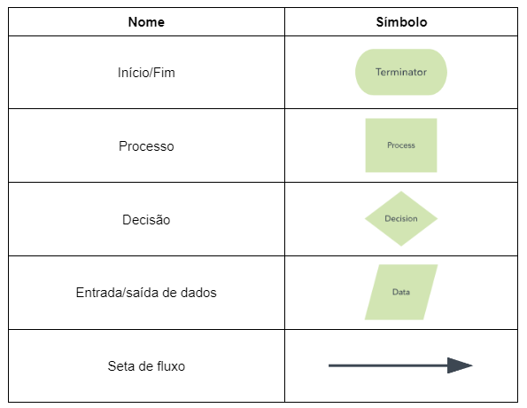
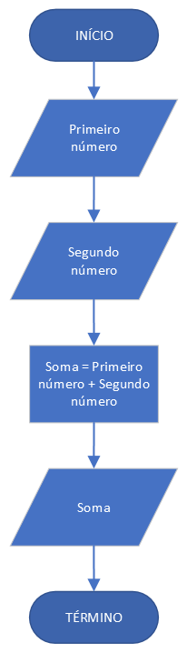
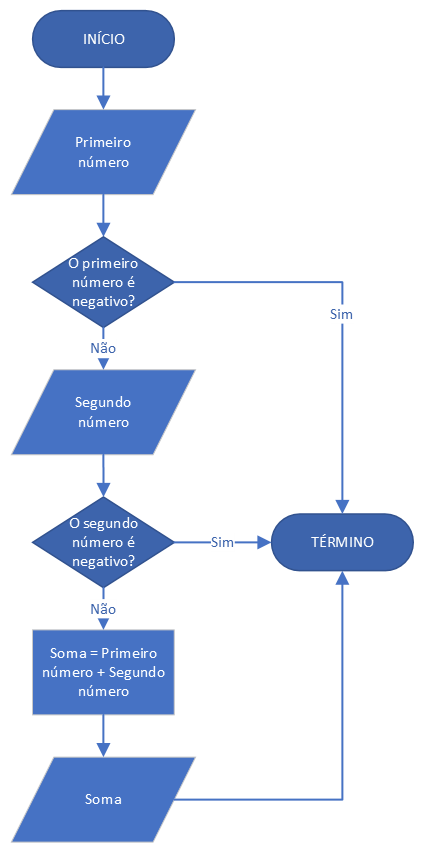

Funcionamento dos Computadores
Antes de seguirmos para os códigos, é importante sabermos como os computadores funcionam. Os computadores são máquinas incríveis, e o seu funcionamento pode parecer complicado, mas vamos explicar de maneira simples! Eles trabalham com eletricidade, que tem dois estados: ligado (1) e desligado (0). Usando essas combinações de “1” e “0”, eles conseguem realizar muitas tarefas. Esses 1s e 0s formam o que chamamos de linguagem de máquina, o modo como o computador "entende" o que precisa fazer.
Linguagem de Máquina
A linguagem de máquina é composta por sequências de 1s e 0s. Toda vez que você usa um computador para jogar, acessar a internet ou fazer um desenho, o computador está traduzindo suas ações para essa linguagem. Para nós, humanos, o uso de 1s e 0s para nos comunicar não é eficiente, precisamos de algo que ajude a traduzir o que escrevemos ou desenhamos para a linguagem do computador.
A linguagem de máquina é o nível mais básico (baixo nível) de comunicação com o computador, e é o único tipo de linguagem que ele realmente entende. Tudo que um computador faz, desde exibir imagens em uma tela até realizar cálculos complexos, é controlado por sequências de 1s e 0s, que também são chamados de bits (a menor unidade de informação). Essa combinação de 1s e 0s é como o alfabeto do computador. Computadores não pensam, tudo aquilo que o computador realiza foi descrito por alguém através de linhas de códigos.
Compilador
É aí que entra o Compilador. Ele é um programa especial que pega as palavras que nós, humanos, escrevemos (em uma linguagem que conseguimos entender) e as transforma em linguagem de máquina (os 1s e 0s). Sem o compilador, seria impossível conversar com o computador!
Introdução
A lógica de programação é a base do desenvolvimento de software, sem ela não é possível desenvolver soluções eficientes.
Ela é a habilidade de entender e decompor um problema complexo, criando um plano de ação detalhado para alcançar uma solução estruturada e eficiente. Sem uma capacidade analítica apurada não é possível criar um bom algoritmo, pois, ao contrário do que muitos pensam, os computadores não são super inteligentes. Na verdade, eles apenas seguem uma sequência lógica de passos que lhe são fornecidos através dos softwares, por isso devemos ser minuciosos ao descrever a solução para um problema.
O que são algoritmos?
Algoritmos são sequências lógicas para realizar alguma tarefa, é o passo a passo para resolver um problema ou fazer alguma atividade. Podemos pensar em algoritmos como uma receita de bolo.
Em uma receita temos os ingredientes, que são as ferramentas necessárias para fazer o bolo, e o modo de preparo, que é a sequência lógica para a realização da tarefa. Exemplo de receita:
Ingredientes
- 2 xícaras de açúcar
- 3 xícaras de farinha de trigo
- 4 colheres de margarina bem cheias
- 3 ovos
- 1 e 1/2 xícara de leite aproximadamente
- 1 colher (sopa) bem cheia de fermento em pó
Modo de Preparo
- Bata as claras em neve;
- Reserve;
- Bata bem as gemas com a margarina e o açúcar;
- Acrescente o leite e farinha aos poucos sem parar de bater;
- Por último agregue as claras em neve e o fermento;
- Coloque em forma grande de furo central untada e enfarinhada;
- Asse em forno médio, preaquecido, por aproximadamente 40 minutos;
- Quando espetar um palito e sair limpo estará assado.
Comparando a receita com um software temos que os ingredientes são a entrada de dados (não se preocupe, entenderemos sobre isso nos próximos módulos), o modo de preparo é o processamento e o bolo é o resultado, a saída.
Não há apenas uma forma de fazer um bolo, assim como não existe apenas uma solução para um problema. Ou seja, podemos desenvolver vários códigos diferentes que irão ter o mesmo resultado. Por isso devemos atentar para a eficiência do código, pois nem sempre apenas funcionar é o suficiente. Às vezes precisaremos de uma solução que funcione e seja extremamente rápida. É aí que entra a lógica de programação, procurar a melhor forma de solucionar o problema. Mas como desenvolver essa habilidade? Praticando.
Está na hora de pôr a mão na massa. A seguir temos alguns exercícios de lógica, tente fazê-los e desenvolva suas habilidades.
Ajude os missionários a atravessar o rio em segurança Ajude o lobo, a ovelha e o repolho a atravessarem o rio Jogue Angry Birds com linguagem de bloco Recrie o jogo Flappy Bird de forma divertida usando blocosFluxogramas
Os fluxogramas descrevem visualmente um processo. Eles são muito importantes para analisarmos as etapas e o que é necessário fazer para solucionar o problema proposto. É uma maneira visual e simplificada de representar um código.
Os fluxogramas usam formas geométricas como símbolos, para representar o que está acontecendo sem precisar de uma descrição complexa. Veja os símbolos que você vai utilizar com mais frequência:
Veja o exemplo de um fluxograma para calcular a soma de dois números.
Agora veremos o exemplo de um fluxograma com uma decisão:
Você consegue descrever o que está acontecendo no fluxograma?
Resposta: Está sendo calculada a soma entre dois números apenas no caso de ambos serem positivos
Vamos praticar um pouco?
- Faça um fluxograma que descreva o caminho da sua casa até a Católica.
- Represente, com um fluxograma, a resolução de um dos Exercícios de Algoritmos